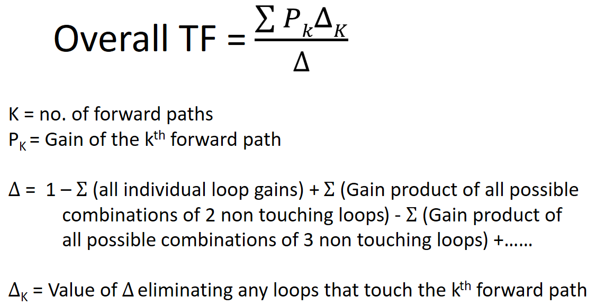

HOME BLOG EBOOKS ABOUT CONTACT SHOP
If the block diagram is an extremely complicated one, it's simply not practical to find the transfer function using block reduction technique. Instead the transfer function of a block diagram can be obtained directly by using the Mason’s Gain formula. Although the Mason’s Gain formula was first developed as a method to solve signal flow graphs, it can be used with Block diagrams as well.
Before you use the Mason's gain formula you need to be familiar with a few terms:
Forward Path: is a path from the input node to the output node. In the example shown below, there are 2 forward paths.
The forward path gain can be obtained by simply multiplying all the transfer functions along the path.
Loop: A loop is a path which originates from a node and terminates at the same node, without passing through any node twice. There are three loops in our example.
Loops that contain only one node are called self-loops. The loop gains can be obtained by multiplying the transfer functions of all the branches in the loop.
Non touching Loops: Loops that do not share a node are called non touching loops. There are no non touching loops in our example.
Loops that contain only one node are called self-loops. The loop gains can be obtained by multiplying the transfer functions of all the branches in the loop.
The first step in using the Mason’s gain formula is to identify all the possible forward paths and loops in the system. Then calculate the forward path gains and the loop gains for all the identified forward paths and loops. Denote the forward path gains as P1, P2, P3 etc. and the loop gains as L1, L2, L3 etc.
The next step is to identify the non-touching loops (if there are any) and then calculate the gain product of all possible combinations of two non-touching loops.
Then the overall gain can be calculated using the Mason's Gain Formula as,

In our example, the overall gain can be calculated as following,
As evident from the above example, the Mason's Gain Formula is a far easier method to find the overall transfer function of a system. All there is to do is to identify the forward paths and loops correctly.